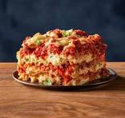

Home
Lasagna

Lasagna is a baked pasta dish made with layers of flat pasta sheets, meat sauce, cheese, and sometimes vegetables. The dish originated in Italy and is especially associated with the region of Bologna. Traditional lasagna usually includes pasta layered with rich meat sauce, creamy béchamel or ricotta cheese, and melted mozzarella on top. The layers are baked in the oven until the pasta becomes tender and the cheese is golden and bubbly. Lasagna is popular around the world because of its rich flavor, comforting texture, and layered presentation.
Ingredients
- 9-12 lasagna noodles
- 2 cups tomato sauce or pasta sauce
- 300–400 g ground beef or ground pork
- 1 cup ricotta cheese or cottage cheese1 cup ricotta cheese or cottage cheese
- 1½ cups shredded mozzarella cheese
- ½ cup grated Parmesan cheese
- 2 cloves garlic, minced
- 1 small onion, chopped
- 2 tablespoons olive oi2 tablespoons olive oil
- Salt and pepper to taste
- Optional: chopped parsley or basil
How to Cook
- Prepare the ingredients: Cook the lasagna noodles according to the package instructions, then drain and set them aside. Chop the onion, mince the garlic, and prepare the cheeses and other ingredients.
- Cook the meat sauce: Heat olive oil in a pan over medium heat, then cook the chopped onion and garlic until fragrant. Add the ground beef and cook until browned, then pour in the tomato sauce and season with salt and pepper. Let the sauce simmer for about 10 minutes.
- Prepare the cheese mixture: In a bowl, mix ricotta cheese with a small amount of Parmesan cheese and optional herbs like parsley or basil.
- Layer the lasagna: In a baking dish, spread a thin layer of meat sauce on the bottom, then place a layer of lasagna noodles on top. Add another layer of meat sauce, spread some ricotta mixture, and sprinkle mozzarella cheese. Repeat these layers until the ingredients are used.
- Add the final topping: Finish with a layer of noodles, more meat sauce, and a generous amount of mozzarella and Parmesan cheese on top.
- Bake and serve: Bake the lasagna in a preheated oven at about 180°C (350°F) for 30–40 minutes until the cheese is melted and golden. Let it rest for about 10 minutes before cutting and serving. 🍝🧀